صور الكوكبات السماوية
"صور الكوكبات الشمالية"
الدب الأصغر
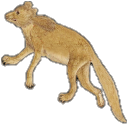الدب الأكبر

التنين

الملتهب

العوّاء

الإكليل الشمالي

الجاثي

السلحفاة

الدجاجة

ذات الكرسي

حامل رأس الغول

ممسك الأعنة

الحوّاء و الحيّة

السهم

العقاب

الدلفين

قطعة الفرس

الفرس الأعظم

المرأة المسلسلة

المثلث

"صور الكوكبات الجنوبية"
قيطس

الجبار

النهر

الأرنب

الكلب الأكبر
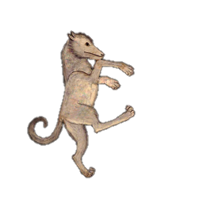الكلب الأصغر
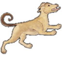السفينة
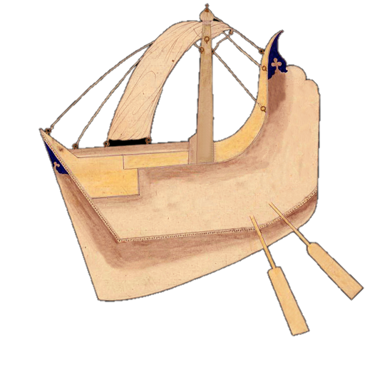الشجاع
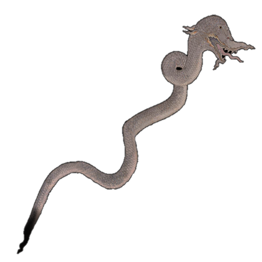الباطية
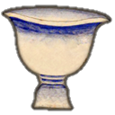الغراب

قنطورس و السبع

المجمرة
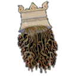الإكليل الجنوبي

الحوت الجنوبي
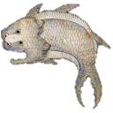"صور الأبراج الإثني عشر"
الحمل

الثور

التوأمان

السرطان

الأسد

العذراء
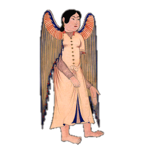الميزان

العقرب

الرامي وهو القوس

الجدي

الدلو و هو ساكب الماء
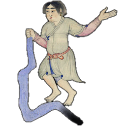الحوت
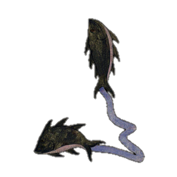

ذِكْر المسلسلة
قال ناظم الأرجوزة أبو علي الحسين بن عبدالرحمن الرازي، ابن الفلكي الشهير عبدالرحمن بن عمر الرازي المشهور بالصوفي:
-
تتبعه كواكب المسلسلةوهي نجوم كلها متصلة
-
بالفرس الثاني ومنها كوكبله ضياء بالرشا يلقب
-
من النجوم النيرات الزهروهو من المرأة شكل الخصر
-
وهو فاعلم آخر المنازلكذاك نبينا عن الاوايل
-
وهو الذي يدعى ببطن الحوتعلماً يقيناً غيرُ ماتبحيت
-
وكوكبٌ منها دوين الساقِتعرفه الأعراب بالعناقِ
-
وقد يسمّى بعناق الأرضِكذاك يروي بعضهم عن بعضِ
-
ثم على الراحة منها قد تجدثلاثةً وواحداً قد انفرد
-
أجرامها نيِّرةٌ براقةهي التي تدعى براس الناقة
-
وأندراميدا لهذي الصورةاسمٌ غدت وهي به مشهورة
كوكبة المسلسلة

ثم يتبع كوكبة الفرس، كوكبة المرأة المسلسلة. ونجوم المسلسلة متصلة بنجوم الفرس الثاني، أي الفرس الكبير وليس قطعة الفرس. ذلك أن القدماء يعتبرون أن أحد نجمي الفرغ المؤخر والموجود في الصورة على سرة الفرس هو مشترك بينه وبين المرأة المسلسلة ويقع في صورتها على الرأس.

الرشا و بطن الحوت
ومن نجوم المرأة المسلسلة نجم براق يسمى عند العرب الرشاء، وهو يقع من الصورة على الجنب الأيسر على طرف الحزام، والرشا آخر منازل القمر الثمانية والعشرين والتي تبدأ من الشرطين وتنتهي بالرشا، وذلك كما نبأنا بها العارفون عن القدماء الأوائل. ونظمها بعضهم في أربع أبيات تسهيلاً لحفظها بقوله:
الشرطان – البطين – الثريا – الدبران الهقعة – الهنعة – الذراع - النثرة
الطرف – الجبهة – الزبرة الصرفة – العوا – السماك - الغفر
الزبانا – الإكليل – القلب – الشولة النعائم – البلدة – سعد الذابح
سعد بلع – سعد السعود – سعد الأخبية الفرغ المقدم – الفرغ المؤخر – الرشا
ويسمّى الرشا أيضاً بطن الحوت وهذا من العلم المؤكد وليس فيه شك.

عناق الأرض
وهناك نجم آخر لامع يقع في الصورة على الساق، يسميه العرب الَعَناق. والعناق هي الصغيرة من الماعز. وجاءت رواية أخرى أنه يسمّى عناق الأرض وأن العناق هو النجم الواقع على رأس الغول، وعناق الأرض هو مايسمّى بالوشق وهو حيوان صحراوي من فصيلة القطط.
عناق الأرض - الصورة من موقع بيئة أبو ظبي
رأس الناقة
وتجد على راحة الكف اليمنى من المرأة المسلسلة ثلاثة نجوم والرابع انفرد عنها قريب منها، وهي نجوم نيِّرة وهي النجوم التي تشكل رأس الناقة التي سنامها هو الكف الخضيب كما شرحنا في كوكبة ذات الكرسي.

أندروميدا
والاسم المشهور لهذه الصورة هو اندراميدا وهو الإسم الإغريقي لها.
اللطخة السحابية - مجرة أندروميدا
وفي الكلام عن هذه الصورة، في كتاب صور الكواكب الثابتة ورد أول توثيق معروف لمجرة أندروميدا، حيث يقول أبو الحسين عبدالرحمن بن عمر الرازي المعروف بأبي الحسين الصوفي واصفاً صورة الحوت العربية:
"وأما العرب فإنها وجدت سطرين من كواكب قد أحاطا بصورة سمكة عظيمة تحت نحر الناقة...... وابتداء السطرين من عند لطخة سحابية ملاصقة للكوكب الرابع عشر الذي في الجنب الأيمن من الثلاثة فوق الميزر، ولايزالان يتسعان إلى وسط صورة السمكة العظيمة، ثم يمضيان من الوسط إلى أن يلتقيا عند ذنبها."
ثم وصف النجوم المكونة لهذين السطرين وهي موضحة في اللقطات المرفقة. واللطخة السحابية هي مجرة أندروميدا والكوكب الرابع عشر هو الكوكب الموضح في الصورة. ويسميها لطخة سحابية لأنها تبدو كأنها قطعة سحاب أبيض خفيف لقوي البصر.

وأما قوله "أحاطا بصورة سمكة عظيمة تحت نحر الناقة" لأنها في اتساع صورتها أكبر من صورة الجبار بقليل. ومن هذه السمكة جاء اسم النجم بطن الحوت، لأن العرب رأت أن هذا النجم ونجوم أخرى معه تكوِّن سطرين مقوسين يلتقيان يشبهان الحوت وهذا النجم يقع في بطنها.


- الفرس الأعظم
إعداد قتيبة أقرع
- المثلث